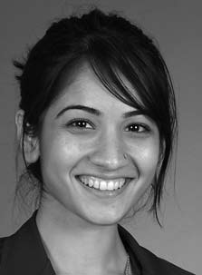

Contact:
15th Floor, UW Tower
Box 359461
Seattle, WA 98195
Email:
I am a Postdoctoral Fellow in the
Department of Biostatistics
at the
University of Washington,
where I work under the supervision of
Dr Patrick Heagerty.
My research focuses on the
statistical evaluation of medical tests and biomarkers for disease prognosis.
In addition to methodological research, I am involved in applied projects at the
Center for Biomedical Statistics.
Since 2009, I have collaborated with academic investigators in the design
and analysis of studies in esophageal cancer treatment,
colon cancer screening, institutional profiling, chronic illness management and juvenile arthritis.
In 2011, I completed my PhD in Biostatistics at the University of Washington under the mentorship of
Dr Margaret Pepe.
My dissertation investigated the topic of combining biomarkers to improve performance in diagnostic medicine.
Prior to starting graduate school, I received a BMath in
Computer Science:
Bioinformatics
from the
University of Waterloo,
Canada. Over the course of my undergraduate degree, I completed internships at
The Hospital for Sick Children,
Cangene Corporation
and
The Royal College of Surgeons in Ireland.